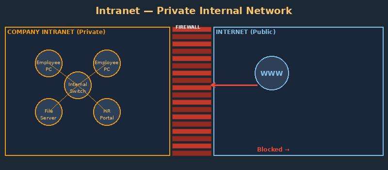

What is an Intranet?

An intranet is a private computer network that uses Internet technologies but is restricted to an organization's internal users (employees). It is like a private, internal version of the web.
Companies use intranets for internal communication, document sharing, employee directories, and internal applications.
Key facts:
- Only authorized employees can access the intranet
- It uses the same protocols as the Internet (HTTP, TCP/IP)
- Firewalls prevent outside access while allowing internal use
- Common uses: company news, HR forms, internal wikis, and staff directories
Related terms: Extranet, Internet, Web Server